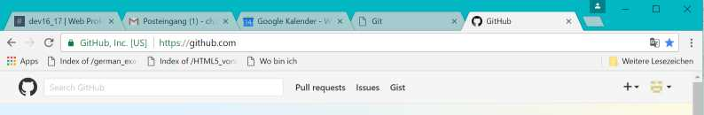
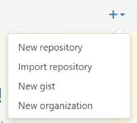
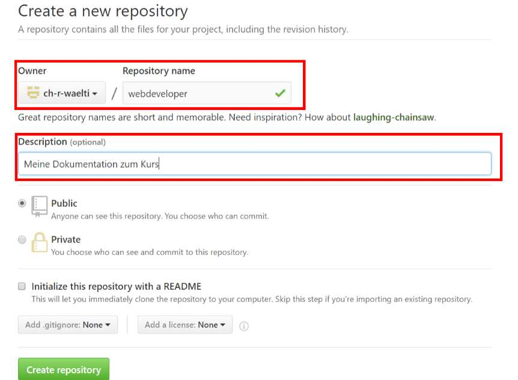
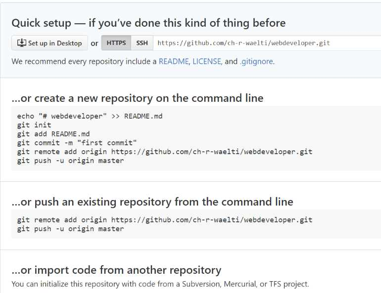

Inhalt
Git
Ist ein Versionierungstool. Aktuell verwenden wir es mit der git shell, ein Unix-angelehntes Kommandofenster.
Wir verwenden in der Schule zusätzlich die Tools
- atom: als Editor
- Browser-Sync: Test Web-Server
Git aufsetzen
Nach dem Laden und installieren sind in der Git Shell zwei, drei Dinge bzw. Kommandos abzuarbeiten:
- git config --global user.name <"DEIN NAME">
- git config --global user.email <"DEINE EMAIL ADDRESSE">
- ssh-keygen -t rsa -b 4096 -C <"DEINE EMAIL ADDRESSE">
Der so generierte ssh-Key ist - wenn gewünscht, bzw. wenn man es leid ist, sich jedes Mal anzumelden - in Git https://github.com/ einzutragen.
Inhalt Git (zum Inhalt)
Projekt aufsetzen (zum inhalt Git)
- Projektordner erstellen: mkdir
- im Projektordner Kommando 'git init'
Initialisiert Git und erstellt den 'master'
- Files editieren mit 'atom .'
Sollen Files in Unterordnern erstellt werden, in der Shell Direktory erstellen und darin mit 'atom .' weitere Files erstellen
- Bearbeitete Files in die 'Staging Area' schreiben: git add <file | .>
'.' lädt alle Files in die 'Staging Area'
- Files versionieren: git commit <-m "sinnvoller aenderungsgrund">
- Testen (mit Browser Sync) im Projektordner: browser-sync start --serverx
Tipp: Um den Browser Sync nicht immer nochmals starten zu müssen, am besten eine zweite Shell öffnen, im Projektordner positionieren und das Kmmando dort aufrufen; dann muss nur noch refreshed werdenBeenden: [cntrl][c] und entsprechend quittieren
Wichtige Kommandos (zum Inhalt Git)
- git add
Nimmt Komponenten der 'Working Area' in 'Stagin Area' auf (Gegenstück ist 'git reset')
Parameter
- <filename>: spezifisches File
- <.>: Alle veränderten Files in der 'Working Area'
- git branch
Aufliesten / Löschen 'Branches'
Parameter
- ...ohne...
Auflisten der Branches. Der aktuelle ist mit einem '*' markiert
- <-d "Name des 'Branch'">
Löschen eines Branches
- ...ohne...
- git checkout
Eigentlich die Umgebung wecheln - oder erstellen.
Parameter
- git commit
Gibt die Komponenten in der 'Staging Area' frei für 'merge' oder 'push' und 'pull'
Parameter
- <-m "sinnvoller Beschrieb des Commits">
wird <-m'> weggelassen, öffnet sich der Default-Editor (VI) zur Eingabe des 'sinnvollen Beschriebs des Commits'
- <-m "sinnvoller Beschrieb des Commits">
- git log
Listet auf, was gemacht wurde
Parameter
- <ganzzahl>: Listet erste Einträge auf
- <negative ganzzahl>: Listet letzte Einträge auf
- git merge
Synchonisiert zwei 'Branches' - dazu muss mit git checkout in den Ziel 'Branch' gewechselt werden und dann das Merge-Kommando abgesetzt werden.
Parameter
- <"Name Quell 'Branch'
- git pull
not documented yet ...
- git push
not documented yet ...
- git reset
Nimmt Komponenten der 'Stagin Area' zurück in die 'Working Area' (Gegenstück ist 'git add')
Parameter- <filename>: spezifisches File
- <.>: Alle veränderten Files in der 'Working Area'
- git status
Listet den Status der Files und Directories
- git tag
Einen Committed 'Release' 'etikettieren'; d.h. man kann einen Commit, der einen komischen Schlüssel generiert benennen und ihn so sprechender machen.
Der Tag-Name sollte in dieser [master]/Entwickler-Instanz eindeutig sein!
Es können mehrere Tags pro Commit vergeben werden.
Mit git checkout kann dieser Release auch angesprochen werden - Sinn oder Unsinn must be well considered ...
git <"name des Tag"> <Commit-ID>
- "name des Tag": Sprechender, in dieser Instanz eindeutiger Name
- Commit-ID ist die ID, die beim 'git commit' angegeben wird. Sie kann mit 'git log' ermittelt werden
'.gitIgnoere' (zum Inhalt Git)
Im Projet kann ein File angelegt werden, dass '.gitIgnore' heisst. Darin können Files aufgelistet werden, die von Git ignoriert werden sollen.
git status (Detail)(zum Inhalt Git)
C:\Users\public\documents\webprofessional\projects\webdeveloper [master +4 ~0 -0 ~]> git status
Nachstehendes Beispiel neu editierter Files (nicht in Staging Area)
|
Nachstehendes Beispiel Files in der Staging Area
|
Nachstehendes Beispiel: Alles committed und OK
|
On branch master nothing to commit, working tree clean |
Git Hub (zum Inhalt Git)
Im Internet kann unter github.com ein Repository eröffnet werden. In der Regel ist es Public - das heisst, jeder, der einen Git Hub Account hat, kann in meiner Source rumschnüffeln.
Das kann unterbunden werden, indem man ein kostenpflichtiges privates Repository eröffnet ($ 7.00 per month, Stand November 2016).
Git Hub: Eröffnen Repository
Dazu muss:
- Ein Account eroeffnen unter github.com (siehe auch Git aufsetzen).
- Unter dem Menü 'New Repository' ein neues Repository eroeffnen 
- Ein Repository eroeffnen

Sinnvolle Paramter eingeben - public oder private (Kostenpflichtig!) eingeben und ... ab damit!
Quittung:
Einige Dinge daraus werden wir als Kommandos in der 'Git Shell' brauchen:
- 'Connect' zum Server: git remote add origin https://github.com/ch-r-waelti/webdeveloper.git
- Upload: git push -u origin master
Git Hub: Synchronsieren
Unser lokaler 'master' muss nun noch mit dem Repository synchronisert werden - dazu (angelehnt an obiger Eröffnung):
Voraussetzung ist allerdings bzw. das wäre vorteilhaft: Das lokale Projekt ist bereingit (add / commit)
- Anmelden: git remote add origin https://github.com/ch-r-waelti/webdeveloper.git
Der Name leitet sich ab:
- der Befehl:
git remote add origin
- die Adresse (Teil 1, der Server):
https://github.com
- die Adresse (Teil 2, der Account):
/ch-r-waelti
- die Adresse (Teil 3, das Projekt/der Projektordner mit Zusatz '.git'):
/webdeveloper.git
- der Befehl:
- Upload: git push -u origin master
- Download: git pull
'push' wie auch 'pull' synchronisieren die Stände
Lifecycle Project (zum Inhalt Git)
Wie man das aufsetzt, ist natürlich Gusto von jedem selber bzw. auch ein Erfahrungswert - und deshalb lasse ich das Kapitel noch offen ...
Ok, ganz lassen kann ich es nicht ... ich glaube, ich werde/würde es so aufsetzen:
- master: Für Erstentwicklung bis zum ersten Release
- developer: Für die Weiterentwicklung eines neuen Releases - dieser wird für einen neuen Release mit dem 'master' synchronisiert und sinnvoll 'tagged' (git tag))
- hot fix: Parallel zu 'master' und 'developer' - ist ein 'hot fix' nötig, wird dieser mit 'master' und 'developer' synchronisiert.
- Ist ein 'hot fix' auf einen älterne Release nötig (remember? git tag), wird, sofern er nur schwierig mit einem wesentlich späteren Release vereinbar ist, als z.Bsp. 'master kunde x' geführt
SASS (zum Inhalt)
Inhalt SASS (zum Inhalt)
SASS ist eine Art, CSS - das behaupten manche - vereinfacht darzustellen. Gleichzeitig, wenn richtig konfiguriert, werden SASS-Files in CSS-Files umgewandelt.
SASS aufsetzen (zum Inhalt SASS)
Die Kommandos sollten in a) der Git-Shell oder b) dem Terminal von PHP Storm erfolgen
Wichtiger Link: Gulp SASS
- npm init
Package Manager (whatever that means ...)
- np install -g gulp
Gulp installieren es erstellt das 'package.json' (oder evt. wird es auch erst mit nächstem Punkt erstellt(?!?)
- npm install gulp --save-dev
Installation von 'gulp' (whatever ...) - dass sollte im Projektordner erfolge.n
- npm install gulp-sass --save-dev
Installation von 'SASS' - dass sollte im Projektordner erfolgen.
- gulpfile.js
Im Projekt-Root muss ein File erstellt werden, welches folgenden Inhalt hat:
'use strict'; var gulp = require('gulp'); var sass = require('gulp-sass'); gulp.task('sass', function () { return gulp.src('css/*.scss') .pipe(sass().on('error', sass.logError)) .pipe(gulp.dest('css')); }); gulp.task('sass:watch', function () { gulp.watch('css/*.scss', ['sass']); });Folgende Passagen sind anzupassen
- 'return gulp.src('css/*.scss')'
Quelle: Pfad/File mit Endung '.scss' (Wildcard für Name ist OK/muss sein(?!?)
- '.pipe(gulp.dest('css'));'
Output des SASS-Precompilers
- 'gulp.watch('css/*.scss', ['sass']);'
Fuer den 'Watch' - Quellpfad.
- 'return gulp.src('css/*.scss')'
BEM (Block Element Modifier) (zum Inhalt SASS)
BEM ist eher eine Methode, wie man das HTML und CSS strukturiert: Man denkt in Blöcken und den sich daraus ergebenden Hierarchien - wobei letztere nicht zu tief sein sollte.
SASS: Wichtige Kommandos (zum Inhalt SASS)
Editieren (zum Inhalt SASS)
Die Syntax entspricht eigentlich CSS mit '{' und '}' sowie 'Eigenschaft:' 'Wert;'.
- $xxx: Variablen, Syntax wie CSS: $variable: wert;
- &xxx,
&yyyWenn Selectors mit gleichem Wert in der Hierarchie, koennen sie so referenziert werden.
- &xxx: wird verwendet, wenn verschachtelt wird: Der Name der höheren Ebene und dieses &xxx angehängt.'
Mixins (zum Inhalt SASS)
Mixins ist eine Möglichkeit, eine Art Templates zu erstellen, welche dann an verschiedenen Orten im SASS referenzert werden können.
Beispiel Template:
|
Beispiel Referenz Template
|
Betrieb (zum Inhalt SASS)
- gulp sass:watch
Startet den 'Watch' und wandelt Aenderungen automatisch in CSS um. Dafür massgebend ist die Code-Sequenz 'gulp.watch('css/*.scss', ['sass']);' (siehe auch weiter oben).